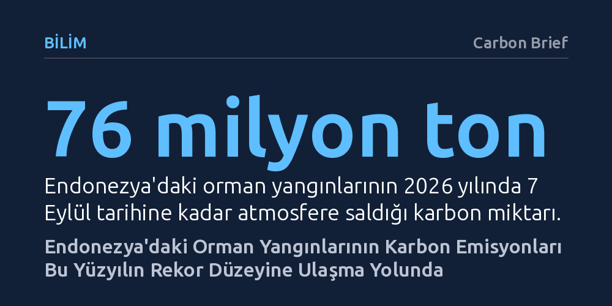

BILIM · Carbon Brief · 2026-09-12
Endonezya'da süren orman yangınlarının karbon salımı, şiddetli El Niño nedeniyle 2015'teki yüzyıl rekoruna ulaşma rotasına girdi. Kurutulan turbalıkların alev almasıyla şimdiden 76 milyon ton karbon açığa çıkarken yangınların tarihi zirveleri zorlayacağı öngörülüyor.
İnsan eliyle tahrip edilerek kurutulan sulak alanların iklim olaylarıyla birleştiğinde devasa kıtasal emisyonlara ve küresel çapta geri dönülemez bir karbon patlamasına nasıl yol açabildiğini gösteriyor.

Endonezya genelinde haftalardır devam eden geniş çaplı orman yangınları, ülkenin bu yüzyıldaki en yıkıcı yangın sezonlarından biriyle yarışır boyutta karbon emisyonu üretme yolunda ilerliyor. Küresel Yangın Emisyonları Veri Tabanı'ndan (GFED) elde edilen son veriler, 7 Eylül itibarıyla yangınların atmosferde şimdiden 76 milyon tonluk karbon birikimine yol açtığını ortaya koyuyor. Bu tablo, yüz binlerce hektarın kül olduğu ve toplamda 333 milyon ton karbonun açığa çıktığı felaket yılı 2015 ile neredeyse birebir aynı doğrultuda ilerlendiğini gösteriyor.
Hollanda'daki Wageningen Üniversitesi'nden Dr. Guido van der Werf, sahadaki yangın dinamiğinin 11 yıl önceki seviyeleri yakalamak üzere olduğunu vurguluyor. Özellikle ülkenin doğusunda yer alan Papua gibi zengin biyoçeşitliliğe sahip bölgelerin "şimdiye kadar hiç olmadığı kadar yandığı" belirtiliyor. Normal koşullarda Ağustos ile Kasım ayları arasındaki kurak dönemde yangınlar gözlemlense de bu yıl alevlerin ulaştığı hacim ve yayılma hızı olağan mevsimsel döngülerin çok ötesine geçmiş durumda.
Endonezya'nın yangın hafızasında yer eden en büyük felaketlerin ortak bir paydası bulunuyor: El Niño iklim olayı. Büyük Okyanus'taki yüzey suyu sıcaklıklarının periyodik olarak yükselmesiyle tetiklenen bu küresel hava olayı, Güneydoğu Asya üzerinde hava sıcaklıklarını belirgin biçimde artırırken yağışları bıçak gibi kesiyor. Haziran ayında başlayan ve 2027 yılına kadar etkisini sürdürmesi beklenen mevcut El Niño dalgası, bilim insanlarına göre kayıt altına alınmış en şiddetli döngülerden biri olmaya aday görünüyor.
Yayasan Konservasi Alam Nusantara adlı çevre kuruluşunda turbalık uzmanı olarak görev yapan Dr. Nisa Novita, El Niño'nun yangınları doğrudan başlatan unsur olmadığını hatırlatıyor. Doğa olayı daha ziyade aşırı sıcak ve kuru hava yaratarak alevlerin tutuşmasını kolaylaştıran, yangının hızla yayılmasına yol açan ve söndürme müdahalelerini neredeyse imkânsız kılan dev bir çarpan işlevi görüyor. Bu kuraklık örtüsü, insan faaliyetleriyle kırılgan hale getirilmiş ekosistemleri patlamaya hazır birer fitile dönüştürüyor.
Yangınların bu denli kontrol edilemez bir felakete evrilmesinin zemininde yalnızca meteorolojik etkenler değil, on yıllardır süregelen arazi tahribatı yatıyor. Bölgede tarım ve palmiye yağı plantasyonları açmak amacıyla kazılan kanallar, normalde su altında kalarak binlerce yıl boyunca karbon depolayan turbalıkların hızla kurumasına yol açıyor. Taban suyu seviyesinin metrelerce düşmesi, organik madde bakımından zengin olan bu toprak tabakasını içten içe haftalarca yanabilen devasa bir yakıt rezervine çeviriyor.
Geçmişte yaşanan büyük yıkımların ardından Endonezya hükümeti, ormanların plantasyonlara dönüştürülmesini kısıtlayan moratoryumlar ilan etmiş ve turbalıkları ıslah etmeye yönelik özel idari mekanizmalar kurmuştu. Nitekim 2019 yılındaki El Niño döneminde yangın sayısının nispeten düşük kalması, bu koruma çabalarının sonuç verdiği yönünde umut yaratmıştı. Ancak 2026'daki alev dalgası, yasal düzenlemeler ile sahadaki kurutulmuş arazilerin kırılganlığı arasındaki derin boşluğu yeniden tartışmaya açıyor.
Endonezya'daki turbalık yangınları yerel bir çevre sorununun sınırlarını aşarak küresel karbon dengesini temelden sarsacak sonuçlar doğuruyor. Bilimsel araştırmalar, 1997 yılındaki tarihi yangın sezonunun o yıl dünyadaki tüm fosil yakıt kaynaklı emisyonların yüzde 13 ila 40'ına denk gelen devasa bir karbon yükü açığa çıkardığını hesaplamıştı. Benzer şekilde 2015 yangınlarında salınan karbondioksit miktarının tüm Avrupa Birliği'nin yıllık fosil yakıt salımını aştığı ve oluşan zehirli pus tabakasının bölgede 100 binden fazla erken ölüme yol açtığı tespit edilmişti.
Mevcut yangın sezonunun yeni bir felaket rekoru kırıp kırmayacağı, El Niño'nun süresine ve restorasyon projelerinin sahada ne kadar tutunabildiğine bağlı olacak. Uzmanlar, koruma mevzuatı ve restorasyon hamleleri sahada tam anlamıyla başarıya ulaşmış olsaydı, böylesine şiddetli bir kuraklıkta bile yangınların bu denli kontrolsüz büyüyemeyeceğini vurguluyor. Bu tablo, tropikal turbalıkların korunmasının sadece yerel bir çevre politikası değil, küresel iklim güvenliğinin ayrılmaz bir parçası olduğunu kanıtlıyor.